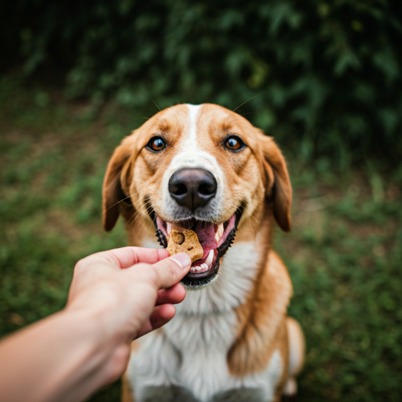

Expert Vets
Our team consists of board-certified specialists.
Experience a new standard of veterinary medicine where state-of-the-art technology meets heartfelt empathy.
At The Curated Sanctuary, we believe that the environment is just as important as the treatment.
From pheromone-diffused waiting areas to sound-dampened recovery suites.


Our team consists of board-certified specialists.
Equipped with the latest diagnostic imaging.
Swift, decisive action when every second counts.


We are currently welcoming new patients.